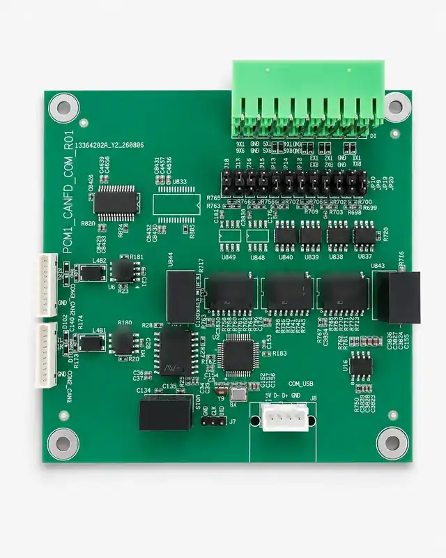

1Too many adapters
✓One internal board
Replace separate CAN, RS-485, and RS-232 adapters with one integrated module.

Xilume 8Hub Embedded
Bring CAN FD and six serial links inside the robot, industrial computer, or machine—through one internal USB connection.

2 × CAN FD 6 Serial Channels Internal USB HeaderWhy 8Hub Embedded?
Reduce separate interface boxes, loose USB cables, and mixed-bus wiring. Keep the communication layer inside the machine and manage it from one host connection.
Replace separate CAN, RS-485, and RS-232 adapters with one integrated module.
Shorter internal signal paths, one host link, and a cleaner installation inside the enclosure.
Keep CAN FD, RS-485, and RS-232 available from the same embedded communication board.
Software support
Both platforms use Xilume drivers. Windows can expose the complete 8Hub as eight COM interfaces in Device Manager after driver installation.
After the Xilume Windows driver is installed, the eight logical interfaces are presented directly in Windows Device Manager.
Use the Xilume Linux driver for CAN and serial access on industrial Linux hosts. The Linux platform is driver-based as well; it is not advertised as driverless.
Hardware
The external enclosure and desktop-style USB connector are removed. Host USB, CAN, and serial wiring connect directly to the embedded board.
Two independent CAN / CAN FD channels with data phase up to 8 Mbps.
Four RS-485 channels for industrial serial equipment.
Two RS-232 channels for service, control, and legacy devices.
Four-pin host connection: 5V, D−, D+, and GND.
Specifications
Core information is kept here; detailed wiring, software, and integration information is available through Xilume support.
Ask a technical question →Xilume 8Hub Embedded
One internal USB link for two CAN FD channels and six serial interfaces, with dedicated Windows and Linux drivers.
Contact Xilume ↗